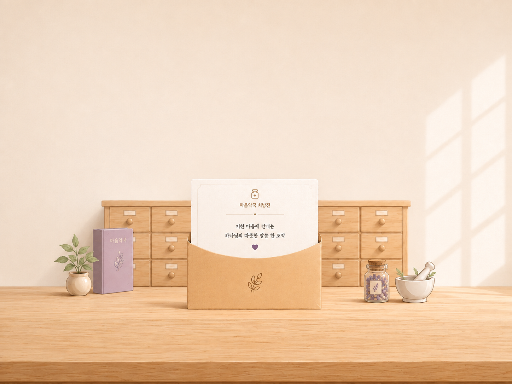

<!-- @dsCard group="Soul Pharmacy" viewport="1000x860" name="마음약국 · 메인 화면" subtitle="마음 증상 선택 (PC 4×2) → 자가문진" -->
<!DOCTYPE html>
<html lang="ko">
<head>
<meta charset="utf-8" />
<meta name="viewport" content="width=device-width, initial-scale=1" />
<link rel="stylesheet" href="../../styles.css" />
<script src="https://unpkg.com/lucide@0.544.0/dist/umd/lucide.min.js"></script>
<script src="https://unpkg.com/react@18.3.1/umd/react.development.js" integrity="sha384-hD6/rw4ppMLGNu3tX5cjIb+uRZ7UkRJ6BPkLpg4hAu/6onKUg4lLsHAs9EBPT82L" crossorigin="anonymous"></script>
<script src="https://unpkg.com/react-dom@18.3.1/umd/react-dom.development.js" integrity="sha384-u6aeetuaXnQ38mYT8rp6sbXaQe3NL9t+IBXmnYxwkUI2Hw4bsp2Wvmx4yRQF1uAm" crossorigin="anonymous"></script>
<script src="https://unpkg.com/@babel/standalone@7.29.0/babel.min.js" integrity="sha384-m08KidiNqLdpJqLq95G/LEi8Qvjl/xUYll3QILypMoQ65QorJ9Lvtp2RXYGBFj1y" crossorigin="anonymous"></script>
<script src="https://cdn.jsdelivr.net/npm/@supabase/supabase-js@2/dist/umd/supabase.js"></script>
<script src="../../_ds_bundle.js?v=tutorial2"></script>
<template id="__bundler_thumbnail" data-bg-color="#F3EEE9">
  <svg viewBox="0 0 1200 800" xmlns="http://www.w3.org/2000/svg">
    <rect width="1200" height="800" fill="#F3EEE9"/>
    <rect x="250" y="300" width="700" height="34" rx="10" fill="#C8A578"/>
    <rect x="360" y="320" width="200" height="250" rx="16" fill="#B7D3C1"/>
    <path d="M360 320 h200 v40 l-100 46 -100 -46 z" fill="#A6C6B1"/>
    <rect x="640" y="320" width="200" height="250" rx="16" fill="#EFB19A"/>
    <path d="M640 320 h200 v40 l-100 46 -100 -46 z" fill="#E59E85"/>
    <text x="600" y="680" font-family="serif" font-size="60" fill="#3E3730" text-anchor="middle">마음약국</text>
  </svg>
</template>
<style>
  html, body { margin: 0; background: var(--bg-page); font-family: var(--font-body); }
  #root { min-height: 100vh; display: flex; align-items: center; justify-content: center; box-sizing: border-box; }
  #root > * { width: 100%; }
  /* 폰 프레임 화면은 가운데 정렬 + 여백 유지 */
  #root .ios-device-frame { width: auto; margin: 24px auto; }
</style>
</head>
<body>
<div id="root"></div>
<script src="audio-manager.js?v=soundctl2"></script>
<script type="text/babel" src="ios-frame.jsx"></script>
<script src="image-slot.js"></script>
<script src="assessment-data.js"></script>
<script src="rx-data.js"></script>
<script src="stickers-data.js"></script>
<script src="https://cdn.jsdelivr.net/npm/html-to-image@1.11.11/dist/html-to-image.js"></script>
<script src="rx-prescriptions.js"></script>
<script>
  // 공유 기능용 Supabase 클라이언트 — anon(공개) 키, RLS로 insert/select만 허용됨.
  window.supabaseClient = window.supabase.createClient(
    "https://lfazwohmzcbizympcghw.supabase.co",
    "sb_publishable_LaF9N4HQLzwqiWT3sqsaYg_WhYU8daj"
  );
</script>
<script type="text/babel" src="LogoMark.jsx"></script>
<script type="text/babel" src="IntroSequence.jsx"></script>
<script type="text/babel" src="MainScreen.jsx?v=soundctl1"></script>
<script type="text/babel" src="AssessmentScreen.jsx"></script>
<script type="text/babel" src="ResultScreen.jsx?v=soundctl1"></script>
<script type="text/babel" src="StickerScreen.jsx?v=tutorial2"></script>
<script type="text/babel">
  // 링크 공유 상태: URL에는 Supabase의 짧은 공유 ID(?id=)만 있고, 실제 처방전/스티커
  // 상태는 Supabase에서 조회해 복원한다. 처방전 본문(성구·복용법 등)은 저장하지 않고
  // mood/rx_type/rx_num 세 값으로 프론트에 이미 있는 데이터에서 다시 찾는다.
  function getSharedId() {
    try {
      return new URLSearchParams(window.location.search).get("id");
    } catch (e) { return null; }
  }

  // 공유 링크 로딩 중 잠깐 보여주는 최소 화면 — 다른 화면과 같은 브랜드 배경만 유지.
  function ShareLoading() {
    return (
      <div style={{ minHeight: "100vh", width: "100%", boxSizing: "border-box", display: "flex", alignItems: "center", justifyContent: "center", backgroundColor: "#F3E8DA", backgroundImage: "url(assets-web/decorate-bg.png)", backgroundSize: "cover", backgroundPosition: "center center", backgroundRepeat: "no-repeat" }}>
        <style>{"@keyframes shareSpin{to{transform:rotate(360deg)}}"}</style>
        <div style={{ width: 34, height: 34, borderRadius: "50%", border: "3px solid rgba(107,95,207,0.22)", borderTopColor: "#6B5FCF", animation: "shareSpin 800ms linear infinite" }} />
      </div>
    );
  }

  // 공유 데이터 로딩이 끝난 뒤 잠깐(3초) 보여주는 감성 인트로 — 버튼 없이 자동으로 처방전
  // 화면으로 넘어간다. 마크업은 ResultScreen.jsx의 처방전 reveal 전 "envelope" 단계
  // (마음 상태와 무관한 정적 화면, mood/rx 참조 없음)를 문자 그대로 재사용하고 텍스트만
  // 공유 링크용 문구로 바꾼 것 — wrapper/이미지/텍스트 위치/clamp 폰트/line-height/margin은
  // 그쪽 값 그대로다. 다만 등장 애니메이션의 delay/duration은 원본 그대로 두면(마지막
  // 문구가 3.1초 뒤에야 뜨기 시작) 화면이 3초 만에 넘어가 버려 서브 문구가 뜨기도 전에
  // 사라졌다 — 그래서 delay/duration만 3초 체류 시간에 맞게 압축했다(순서·easing·
  // translateY 등 애니메이션 자체의 성격은 동일, 숫자만 축소).
  // 별도의 background-image/scene 구조나 @media 브레이크포인트를 새로 만들지 않는다
  // (그렇게 했더니 A와 계속 어긋났다). ResultScreen에는 있는 성구 인용 블록은 공유
  // 인트로에는 필요 없어 생략했고, "phase" 상태·클릭 스킵·envExit 페이드아웃도 옮기지
  // 않았다 — 화면 전환 자체는 App()의 공용 Fade 크로스페이드가 이미 처리한다.
  // 문구를 1페이지("당신에게 마음처방전이 도착했어요.") → 2페이지("누군가 당신의 응원을 받고
  // 싶어 이 마음처방전을 보냈어요.") → 3페이지("응원의 마음을 스티커로 붙여 전해주세요.")로
  // 순차 페이드인/아웃 전환한다. 1~2페이지는 "왜 도착했는지" 설명이고, 3페이지는 "무엇을
  // 하면 되는지" 행동 안내라 역할이 다르다. 배경·봉투 이미지·"말씀 처방전" 라벨·전체
  // 레이아웃은 그대로 두고 중앙 문구 영역만 크로스페이드된다.
  function ShareIntro() {
    const [page, setPage] = React.useState(0);
    const [pageVisible, setPageVisible] = React.useState(true);
    React.useEffect(() => {
      const t1 = setTimeout(() => setPageVisible(false), 2100);
      const t2 = setTimeout(() => { setPage(1); setPageVisible(true); }, 2650);
      const t3 = setTimeout(() => setPageVisible(false), 4300);
      const t4 = setTimeout(() => { setPage(2); setPageVisible(true); }, 4850);
      return () => { clearTimeout(t1); clearTimeout(t2); clearTimeout(t3); clearTimeout(t4); };
    }, []);
    return (
      <div style={{ position: "relative", width: "100%", height: "100vh", overflow: "hidden", background: "#F3E7D6", display: "flex", alignItems: "center", justifyContent: "center", animation: "rxfade 900ms ease-out" }}>
        <style>{`@keyframes rxfade{from{opacity:0}to{opacity:1}}@keyframes rximg{from{opacity:0}to{opacity:1}}@keyframes rxup{from{opacity:0;transform:translateY(14px)}to{opacity:1;transform:translateY(0)}}`}</style>
        <div style={{ position: "absolute", inset: 0, width: "100%", height: "100%" }}>
          
          <div style={{ position: "absolute", left: "50%", top: "17%", transform: "translateX(-50%)", width: "86%", maxWidth: 720, textAlign: "center", pointerEvents: "none" }}>
            <div style={{ position: "relative", top: "-10px", fontFamily: "var(--font-body)", fontWeight: 600, fontSize: "clamp(14px,1.35vw,18px)", color: "#9B7B5E", letterSpacing: "0.2em", opacity: 0, animation: "rxup 700ms 100ms cubic-bezier(0.22,1,0.32,1) both" }}>말씀 처방전</div>
            <div style={{ marginTop: "0.5em", opacity: pageVisible ? 1 : 0, transition: "opacity 550ms ease" }}>
              {page === 0 ? (
                <div style={{ fontFamily: "var(--font-title)", fontWeight: 600, fontSize: "clamp(17px,2.2vw,26px)", color: "#5B4A3C", letterSpacing: "0.02em", opacity: 0, animation: "rxup 750ms 350ms cubic-bezier(0.22,1,0.32,1) both" }}>당신에게<br />마음처방전이 도착했어요.</div>
              ) : page === 1 ? (
                <div style={{ fontFamily: "var(--font-title)", fontWeight: 600, fontSize: "clamp(17px,2.2vw,26px)", color: "#5B4A3C", letterSpacing: "0.02em" }}>누군가 당신의 응원을 받고 싶어<br />이 마음처방전을 보냈어요.</div>
              ) : (
                <div style={{ fontFamily: "var(--font-title)", fontWeight: 600, fontSize: "clamp(17px,2.2vw,26px)", color: "#5B4A3C", letterSpacing: "0.02em" }}>응원의 마음을<br />스티커로 붙여 전해주세요.</div>
              )}
            </div>
          </div>
        </div>
      </div>
    );
  }

  // 공유 기간(7일)이 지났거나 존재하지 않는 링크로 들어온 경우.
  function ShareExpired({ onGoMain }) {
    return (
      <div style={{ minHeight: "100vh", width: "100%", boxSizing: "border-box", display: "flex", flexDirection: "column", alignItems: "center", justifyContent: "center", padding: "40px 32px", backgroundColor: "#F3E8DA", backgroundImage: "url(assets-web/decorate-bg.png)", backgroundSize: "cover", backgroundPosition: "center center", backgroundRepeat: "no-repeat" }}>
        <div style={{ maxWidth: 420, width: "100%", textAlign: "center" }}>
          <p style={{ fontFamily: "var(--font-title)", fontWeight: 700, fontSize: 22, lineHeight: 1.5, color: "var(--ink-900)", margin: "0 0 14px" }}>
            이 처방전의 공유 기간이 끝났어요.
          </p>
          <p style={{ fontFamily: "var(--font-body)", fontSize: 14.5, lineHeight: 1.7, color: "var(--text-muted)", margin: "0 0 30px" }}>
            공유 링크는 7일 동안만 열어볼 수 있어요.
          </p>
          <button onClick={onGoMain} style={{ display: "block", width: "100%", padding: "16px", borderRadius: 999, border: "none", cursor: "pointer", background: "linear-gradient(135deg,#ABA2ED,#8E86DE)", color: "#fff", fontFamily: "var(--font-body)", fontWeight: 700, fontSize: 16, boxShadow: "0 10px 24px rgba(107,95,207,0.28)" }}>
            새로운 마음 처방전을 받아보세요
          </button>
        </div>
      </div>
    );
  }

  // 처방전 화면에서 "스티커 붙여 공유하기"를 누른 직후 잠깐 보여주는 안내 막 — 스티커를
  // 붙이고 공유한다는 기능이 처음엔 낯설 수 있어서, "내가 먼저 스티커를 붙인다 → 공유한다
  // → 응원 스티커를 받는다"는 구조를 짧게 설명한다. 예전에 있던 동일한 화면(배경
  // decorate-bg.png, 페이드인 900ms→2.2~2.6초 유지→페이드아웃, phase 0/1 두 단계로
  // 문구가 넘어가는 연출)을 그대로 재사용하고 문구만 새로 바꿨다 — 자기 처방전을 만드는
  // 흐름(A)에만 있고, 공유 링크를 받은 사람 흐름(B)에는 없다.
  function DecorateIntro({ mood, onDone }) {
    const { Icon, MOODS } = window.DesignSystem_d4e5a3;
    const m = (MOODS && MOODS[mood]) || null;
    const [phase, setPhase] = React.useState(0);
    const [vis, setVis] = React.useState(false);
    React.useEffect(() => {
      const t0 = setTimeout(() => setVis(true), 60);
      const t1 = setTimeout(() => setVis(false), 2200);
      const t2 = setTimeout(() => { setPhase(1); }, 3000);
      return () => { clearTimeout(t0); clearTimeout(t1); clearTimeout(t2); };
    }, []);
    React.useEffect(() => {
      if (phase !== 1) return;
      const t0 = setTimeout(() => setVis(true), 60);
      const t1 = setTimeout(() => setVis(false), 2600);
      const t2 = setTimeout(() => onDone && onDone(), 3400);
      return () => { clearTimeout(t0); clearTimeout(t1); clearTimeout(t2); };
    }, [phase]);
    const tStyle = { fontFamily: "var(--font-title)", fontWeight: 600, fontSize: 22, lineHeight: 1.7, color: "var(--ink-900)", margin: 0 };
    return (
      <div style={{ minHeight: "100vh", width: "100%", boxSizing: "border-box", display: "flex", flexDirection: "column", alignItems: "center", justifyContent: "center", padding: "40px 32px", backgroundColor: "#F3E8DA", backgroundImage: "url(assets-web/decorate-bg.png)", backgroundSize: "cover", backgroundPosition: "center center", backgroundRepeat: "no-repeat" }}>
        <div style={{ maxWidth: 520, textAlign: "center", opacity: vis ? 1 : 0, transform: vis ? "translateY(0)" : "translateY(10px)", transition: "opacity 900ms cubic-bezier(0.22,0.61,0.36,1), transform 900ms cubic-bezier(0.22,0.61,0.36,1)" }}>
          {m && <div style={{ width: 72, height: 72, borderRadius: "50%", background: m.fill, display: "flex", alignItems: "center", justifyContent: "center", boxShadow: "0 10px 26px rgba(120,92,64,0.16)", margin: "0 auto 26px" }}><Icon name={m.icon} size={32} color={m.ink} stroke={1.5} /></div>}
          {phase === 0
            ? <p style={tStyle}>응원받고 싶은 사람에게<br/>마음처방전 링크를 보내보세요.</p>
            : <p style={tStyle}>링크를 받은 사람이<br/>응원의 마음을 스티커로 남겨줄 수 있어요.</p>}
        </div>
      </div>
    );
  }

  // 화면 전환 크로스페이드: step이 바뀌면 이전 화면이 부드럽게 사라지고 새 화면이 페이드 인.
  function Fade({ step, children }) {
    const [shown, setShown] = React.useState({ step, children });
    const [visible, setVisible] = React.useState(true);
    React.useEffect(() => {
      if (step === shown.step) { setShown({ step, children }); return; }
      setVisible(false);
      const t = setTimeout(() => { setShown({ step, children }); setVisible(true); }, 340);
      return () => clearTimeout(t);
    }, [step, children]);
    return (
      <div style={{ width: "100%", opacity: visible ? 1 : 0, transform: visible ? "translateY(0)" : "translateY(10px)", transition: "opacity 340ms cubic-bezier(0.22,0.61,0.36,1), transform 340ms cubic-bezier(0.22,0.61,0.36,1)" }}>
        {shown.children}
      </div>
    );
  }

  // 우측 상단 고정 BGM/효과음 ON-OFF 컨트롤 — 마음약국 전체 화면(App 최상단)에 항상 떠 있다.
  // window.__soundSettings(audio-manager.js)를 그대로 구독만 할 뿐, 각 화면의 BGM 재생
  // 시점이나 효과음 트리거 로직은 전혀 건드리지 않는다. 설정은 localStorage에 영속되어
  // 새로고침·화면 전환에도 유지된다.
  function SoundToggle({ label, on, onToggle }) {
    const { Icon } = window.DesignSystem_d4e5a3 || {};
    return (
      <button
        onClick={onToggle}
        aria-pressed={on}
        aria-label={`${label} ${on ? "끄기" : "켜기"}`}
        style={{
          display: "flex", alignItems: "center", gap: 6, height: 32, padding: "0 11px",
          borderRadius: 999, border: on ? "1px solid rgba(91,74,60,0.20)" : "1px solid rgba(91,74,60,0.12)",
          background: on ? "rgba(255,255,255,0.92)" : "rgba(255,255,255,0.55)",
          boxShadow: "0 4px 12px rgba(91,74,60,0.12)", cursor: "pointer",
          fontFamily: "var(--font-body)", fontWeight: 700, fontSize: 11.5, letterSpacing: "0.02em",
          color: on ? "#5B4A3C" : "#B5A897", WebkitTapHighlightColor: "transparent",
          flex: "0 0 auto", whiteSpace: "nowrap", pointerEvents: "auto", boxSizing: "border-box",
        }}
      >
        {Icon && <Icon name={on ? "volume-2" : "volume-x"} size={14} stroke={2} color={on ? "#5B4A3C" : "#B5A897"} />}
        <span>{label}</span>
      </button>
    );
  }
  function SoundControl() {
    const [settings, setSettings] = React.useState(() => (window.__soundSettings ? window.__soundSettings.get() : { bgm: true, sfx: true }));
    React.useEffect(() => {
      if (!window.__soundSettings) return;
      return window.__soundSettings.subscribe(setSettings);
    }, []);
    // right만을 기준으로 고정(왼쪽 값과 조합하지 않음) — 컨테이너는 콘텐츠 폭만큼만
    // 차지하며 항상 그 오른쪽 끝이 정확히 viewport 오른쪽에서 right만큼 떨어진 지점에
    // 온다. maxWidth로 (버튼 두 개 + 간격을 합친) 전체 폭이 viewport를 넘지 않도록
    // 다시 한 번 상한을 걸고, 그래도 좁으면 flexWrap이 세로 배치로 자동 전환한다.
    // 컨테이너 자체는 pointerEvents:none이라 빈 공간을 눌러도 아래 화면 클릭을 막지
    // 않고, 버튼 각각에만 pointerEvents:auto를 되돌려 놓았다.
    return (
      <div style={{
        position: "fixed",
        top: "max(20px, env(safe-area-inset-top))",
        right: "max(24px, env(safe-area-inset-right))",
        maxWidth: "calc(100vw - 40px)",
        boxSizing: "border-box",
        zIndex: 999999,
        display: "flex",
        flexWrap: "wrap",
        justifyContent: "flex-end",
        alignItems: "flex-start",
        gap: 7,
        pointerEvents: "none",
      }}>
        <SoundToggle label="BGM" on={settings.bgm} onToggle={() => window.__soundSettings && window.__soundSettings.setBgm(!settings.bgm)} />
        <SoundToggle label="효과음" on={settings.sfx} onToggle={() => window.__soundSettings && window.__soundSettings.setSfx(!settings.sfx)} />
        {/* 임시 디버그 표시 — 원인 확인 후 제거 예정. 실제 window.__bgm/__sfx의 muted 플래그를
            그대로 보여줘서, 버튼 상태와 실제 오디오 음소거 플래그가 일치하는지 눈으로 바로
            확인할 수 있게 한다. */}
        <div style={{ flexBasis: "100%", textAlign: "right", fontSize: 10, color: "#8a7a68", background: "rgba(255,255,255,0.85)", padding: "3px 8px", borderRadius: 8, pointerEvents: "none", lineHeight: 1.6 }}>
          debug: settings.bgm={String(settings.bgm)} settings.sfx={String(settings.sfx)}<br />
          bgm.muted={String(window.__bgm && window.__bgm.muted)} sfx.muted={String(window.__sfx && window.__sfx.muted)}<br />
          localStorage={typeof localStorage !== "undefined" ? String(localStorage.getItem("soulpharmacy-sound-settings-v1")) : "n/a"}
        </div>
        <button
          onClick={() => { try { localStorage.removeItem("soulpharmacy-sound-settings-v1"); } catch (e) {} location.reload(); }}
          style={{ flexBasis: "100%", textAlign: "right", fontSize: 10, color: "#8a7a68", background: "rgba(255,255,255,0.85)", padding: "3px 8px", borderRadius: 8, pointerEvents: "auto", border: "1px solid rgba(91,74,60,0.2)", cursor: "pointer", marginTop: 4 }}
        >
          설정 초기화 후 새로고침
        </button>
      </div>
    );
  }

  function App() {
    const sharedId = getSharedId();
    const [step, setStep] = React.useState(sharedId ? "shareLoading" : "intro"); // shareLoading | shareIntro | shareExpired | intro | main | assessment | result | decorateIntro | sticker
    const [mood, setMood] = React.useState(null);
    const [sharedStickers, setSharedStickers] = React.useState([]);
    const [shareId, setShareId] = React.useState(null); // 로드에 성공한 공유의 id — StickerScreen에 넘겨 이후 추가 스티커도 같은 공유에 누적
    const [sharedExtraH, setSharedExtraH] = React.useState(0); // 공유 시점의 "공간 늘리기/줄이기" 최종값
    const [rx, setRx] = React.useState(null);

    const goMainFresh = () => {
      window.history.replaceState(null, "", window.location.pathname);
      setStep("main");
    };

    // ?id= 공유 링크로 들어온 경우: Supabase에서 처방전(mood/rx_type/rx_num)과 그동안 쌓인
    // 응원 스티커(rx_share_stickers)를 조회해 복원한다. 본문은 저장돼있지 않고 프론트 데이터에서
    // 재구성하며, expires_at이 지난 공유는 RLS가 애초에 select 결과에서 제외한다.
    React.useEffect(() => {
      if (!sharedId) return;
      let cancelled = false;
      (async () => {
        try {
          if (!window.supabaseClient) throw new Error("no-client");
          const { data, error } = await window.supabaseClient
            .from("rx_shares").select("*").eq("id", sharedId).single();
          if (error || !data) throw error || new Error("not-found-or-expired");
          const resolved = window.resolvePrescriptionByNum(data.mood, data.rx_type, data.rx_num);
          if (!resolved) throw new Error("unresolvable");
          const { data: stickerRows } = await window.supabaseClient
            .from("rx_share_stickers").select("*").eq("share_id", sharedId).order("created_at", { ascending: true });
          if (cancelled) return;
          setMood(data.mood);
          setRx(resolved);
          setShareId(sharedId);
          setSharedExtraH(data.extra_h || 0);
          // x/y/scale은 카드 기준 정규화 값(x:%, y:카드 높이 비율, scale:카드 너비 비율) 그대로
          // 넘긴다 — 이 세션의 실제 카드 크기로 변환하는 건 StickerScreen이 mount 후에 한다.
          setSharedStickers((stickerRows || []).map((row) => ({
            src: row.sticker_asset_id, x: row.x, y: row.y, scale: row.scale, rotate: row.rotate,
          })));
          setStep("shareIntro"); // 몇 초간 감성 인트로를 보여준 뒤 자동으로 처방전 화면으로 넘어감
        } catch (e) {
          if (!cancelled) setStep("shareExpired"); // 만료/삭제/존재하지 않는 링크
        }
      })();
      return () => { cancelled = true; };
    }, [sharedId]);

    // shareIntro는 버튼 없이 몇 초 보여준 뒤 자동으로 처방전 화면으로 넘어간다.
    // 1→2→3페이지 문구가 순차로 페이드 전환되므로(ShareIntro 내부), 세 문구를 모두
    // 읽을 시간을 주기 위해 체류 시간을 7.4초로 늘렸다.
    React.useEffect(() => {
      if (step !== "shareIntro") return;
      const t = setTimeout(() => setStep("sticker"), 7400);
      return () => clearTimeout(t);
    }, [step]);

    // 화면별 배경음악: 1=인트로 안내, 2=감정선택·문진·처방전, 3=저장/공유(스티커 화면에서 세부 제어)
    React.useEffect(() => {
      if (!window.__bgm) return;
      // 트랙 시작 시점은 화면 내부에서 정밀 제어: 2번은 AssessmentScreen Q1 종이 등장,
      // 3번은 ResultScreen 처방전 등장. 여기서는 1번(인트로·감정선택)만 담당.
      if (step === "intro" || step === "loading" || step === "main") window.__bgm.play(1);
    }, [step]);

    let screen = null;
    if (step === "shareLoading") {
      screen = <ShareLoading />;
    } else if (step === "shareIntro") {
      screen = <ShareIntro />;
    } else if (step === "shareExpired") {
      screen = <ShareExpired onGoMain={goMainFresh} />;
    } else if (step === "intro") {
      screen = <window.IntroSequence onDone={() => setStep("loading")} />;
    } else if (step === "loading") {
      screen = <window.IntroLoading onDone={() => setStep("main")} />;
    } else if (step === "main") {
      screen = <window.MainScreen selected={mood} onSelect={setMood} onNext={(k) => setStep("assessment")} />;
    } else if (step === "assessment") {
      screen = <window.AssessmentScreen mood={mood} onBack={() => setStep("main")} onSubmit={(selections) => {
        const chosen = window.resolvePrescription(mood, selections, null);
        setRx(chosen);
        setStep("result");
      }} />;
    } else if (step === "result") {
      // 공유 안내(shareGuide phase)는 ResultScreen 자체 phase 시퀀스 안(envelope 다음, reveal
      // 전)에서 이미 자동으로 보여준다. "스티커 붙여 공유하기" 버튼은 별개로 DecorateIntro
      // (스티커+공유 기능 설명)를 거쳐 sticker로 넘어간다.
      screen = <window.ResultScreen mood={mood} rx={rx} onAgain={() => { setRx(null); setStep("main"); }} onDecorate={() => setStep("decorateIntro")} />;
    } else if (step === "decorateIntro") {
      screen = <DecorateIntro mood={mood} onDone={() => setStep("sticker")} />;
    } else if (step === "sticker") {
      screen = <window.StickerScreen mood={mood} rx={rx} initialStickers={sharedStickers} initialShareId={shareId} initialExtraH={sharedExtraH} onBack={() => setStep("result")} onNext={() => setStep("main")} />;
    }
    return (
      <React.Fragment>
        <SoundControl />
        <Fade step={step}>{screen}</Fade>
      </React.Fragment>
    );
  }
  ReactDOM.createRoot(document.getElementById("root")).render(<App />);
</script>
</body>
</html>
